Project 4 · Part A
Overview
In this project, I learned how to stitch photos into a mosaic. I shot multiple photos from a fixed point, recovered the homography between each pair, warped one image into the other's frame, and blended the results. Using only NumPy for the linear algebra, I implemented each of those methodsfrom scratch.
Part A.1
For this part of the project, I took multiple images of San Francisco skyline, Sather Gate, and my dorm Unit 2 to build the image stitching based on.
I kept in mind to stay in the same position (fix center of projection) and take photos as close together in time as possible so panorama stitching looks convincing in the result. Also, I tried to take images that has overlaps, so I have information I can use to glue them together. To test out the effect of zooming in the image stitching, I took images at different focal lengths as well.
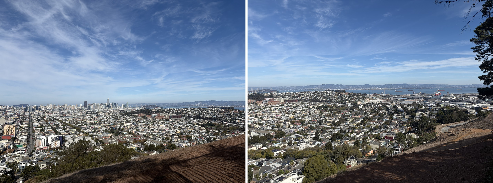
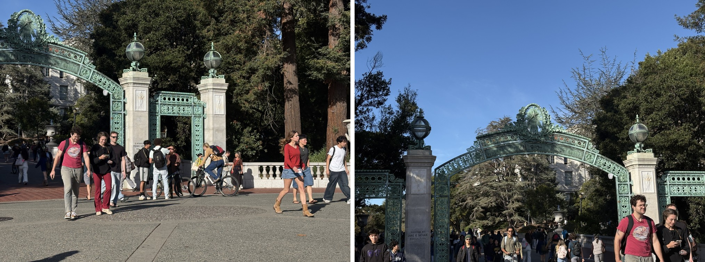
sather1, the right half of the gate (reference image). Right: sather2, turned left to take in the main arch.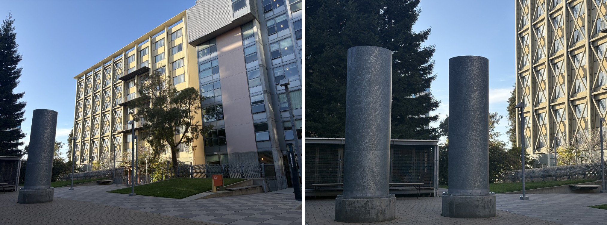
dorm1, the building and courtyard (reference image). Right: dorm2, turned left toward the two steel pillars, more zoomed in.Part A.2
In this step, I impremented computeH(im1_pts, im2_pts) function.
A homography maps a point $p = (x, y, 1)$ to $p' = Hp$. We get 8 unknowns, and I fix $h_{33} = 1$ to remove the scale ambiguity. Each point correspondence gives two linear equations below.
$$\begin{bmatrix} x & y & 1 & 0 & 0 & 0 & -ux & -uy \\ 0 & 0 & 0 & x & y & 1 & -vx & -vy \end{bmatrix} \begin{bmatrix} h_{11} \\ h_{12} \\ \vdots \\ h_{32} \end{bmatrix} = \begin{bmatrix} u \\ v \end{bmatrix}$$
computeH(im1_pts, im2_pts) stacks these rows for all $n$ points into $A h = b$. With $n = 4$ there is exactly one solution, but a few pixels of error in any point changes $H$ a lot. With $n > 4$ the system is overdetermined, so I solve it in the least-squares sense with np.linalg.lstsq.
Correspondences Visualized
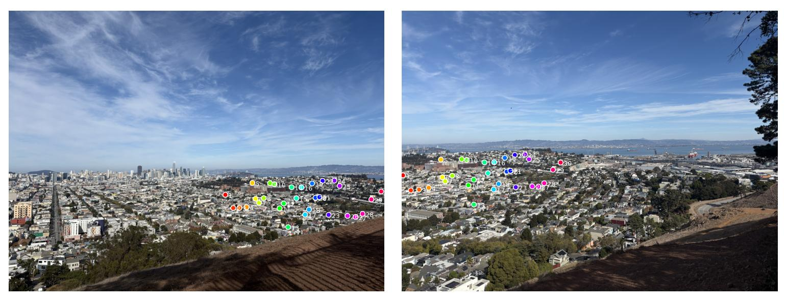
Here are the first three correspondences' rows of SF skyline image:
$$\begin{bmatrix} 5.099 & 627.7 & 1 & 0 & 0 & 0 & -4197 & -516700 \\ 0 & 0 & 0 & 5.099 & 627.7 & 1 & -3579 & -440500 \\ 20.89 & 587.9 & 1 & 0 & 0 & 0 & -17340 & -488100 \\ 0 & 0 & 0 & 20.89 & 587.9 & 1 & -13980 & -393400 \\ 11.20 & 654.1 & 1 & 0 & 0 & 0 & -9312 & -544100 \\ 0 & 0 & 0 & 11.20 & 654.1 & 1 & -8109 & -473700 \\ & & & & \vdots & & & \end{bmatrix} h = \begin{bmatrix} 823.2 \\ 701.8 \\ 830.1 \\ 669.1 \\ 831.8 \\ 724.3 \\ \vdots \end{bmatrix}$$
The recovered homography:
$$H = \begin{bmatrix} 0.3237 & 0.2259 & 721.7 \\ -0.3033 & 0.9367 & 151.2 \\ -0.000511 & 0.0000843 & 1 \end{bmatrix}$$
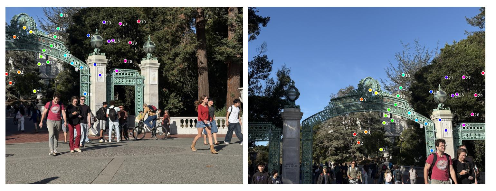
Here are the first three correspondences' rows of Sather Gate image:
$$\begin{bmatrix} 452.5 & 542.2 & 1 & 0 & 0 & 0 & -2031 & -2434 \\ 0 & 0 & 0 & 452.5 & 542.2 & 1 & -129500 & -155100 \\ 455.5 & 620.5 & 1 & 0 & 0 & 0 & -2394 & -3262 \\ 0 & 0 & 0 & 455.5 & 620.5 & 1 & -167300 & -227900 \\ 456.0 & 600.6 & 1 & 0 & 0 & 0 & -2968 & -3909 \\ 0 & 0 & 0 & 456.0 & 600.6 & 1 & -158300 & -208500 \\ & & & & \vdots & & & \end{bmatrix} h = \begin{bmatrix} 4.5 \\ 286.2 \\ 5.3 \\ 367.4 \\ 6.5 \\ 347.2 \\ \vdots \end{bmatrix}$$
The recovered homography:
$$H = \begin{bmatrix} 1.393 & -0.01755 & -615.3 \\ 0.1577 & 1.363 & -455.4 \\ 0.000311 & 0.000181 & 1 \end{bmatrix}$$
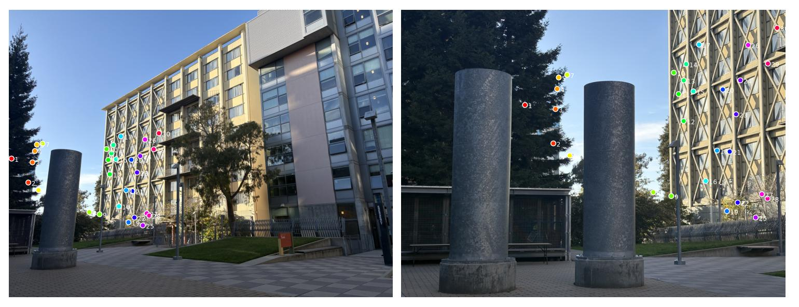
Lastly, here are the first three correspondences' rows of unit 2 image:
$$\begin{bmatrix} 324.3 & 249.6 & 1 & 0 & 0 & 0 & -3409 & -2623 \\ 0 & 0 & 0 & 324.3 & 249.6 & 1 & -179700 & -138300 \\ 325.0 & 247.6 & 1 & 0 & 0 & 0 & -3765 & -2868 \\ 0 & 0 & 0 & 325.0 & 247.6 & 1 & -179500 & -136700 \\ 345.3 & 394.0 & 1 & 0 & 0 & 0 & -5006 & -5713 \\ 0 & 0 & 0 & 345.3 & 394.0 & 1 & -234100 & -267100 \\ & & & & \vdots & & & \end{bmatrix} h = \begin{bmatrix} 10.5 \\ 554.0 \\ 11.6 \\ 552.3 \\ 14.5 \\ 678.0 \\ \vdots \end{bmatrix}$$
The recovered homography:
$$H = \begin{bmatrix} 1.139 & -0.1292 & -326.4 \\ 0.3228 & 0.8632 & 291.9 \\ 0.000428 & -0.000133 & 1 \end{bmatrix}$$
Part A.3
In this part of the project, I impremented warpImageNearestNeighbor(im, H) and warpImageBilinear(im, H) using inverse warping. To do so, I broke down the task into the following three parts:
1. Bounding Box Computation
To size the output, I pass the four corners of the source image through $H$ and take their bounding box. I then left-multiply $H$ by a translation (translate_homography) so the box starts at $(0, 0)$. Each warp returns a 4-channel image, and the extra channel is an alpha mask that is 1 where the output pixel has a value and 0 where it falls outside the source. This mask is save to be used in the blending task!
2. Inverse Coordinate Mapping
np.meshgrid builds every output coordinate at once as a $3 \times N$ homogeneous array, a single matrix multiply by $H^{-1}$ maps them all, and I divide by the third coordinate.
3. Scratch Interpolation
warpImageNearestNeighbor rounds each source coordinate to the nearest pixel center and copies that pixel.warpImageBilinear takes the four surrounding pixels and averages them with weights $(1-d_x)(1-d_y)$, $d_x(1-d_y)$, $(1-d_x)d_y$, $d_x d_y$, where $d_x, d_y$ are the fractional offsets. I didn't use any library interpolation.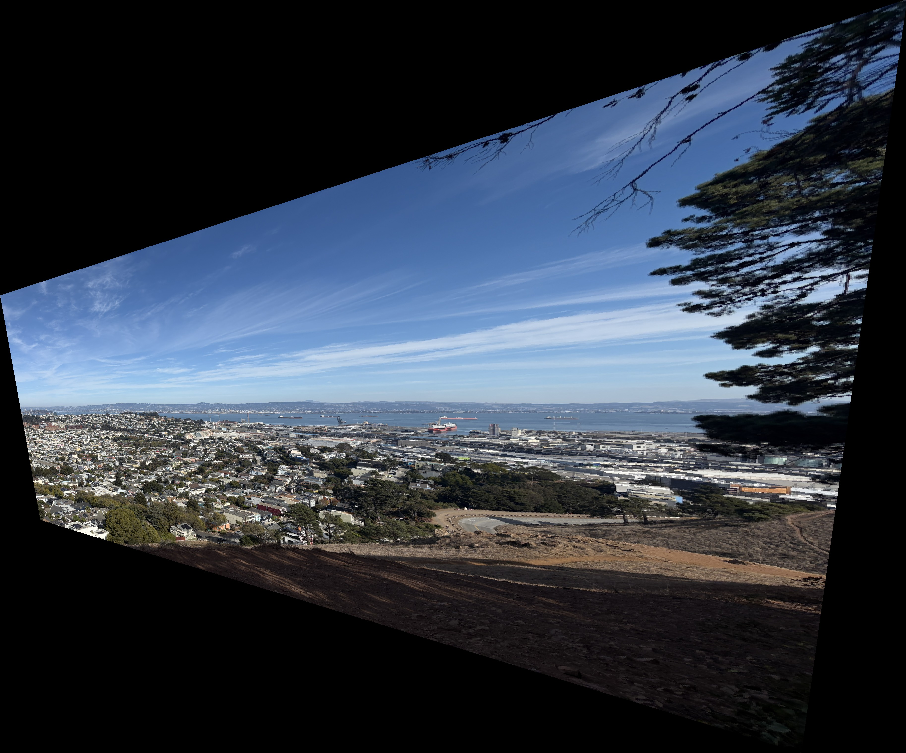
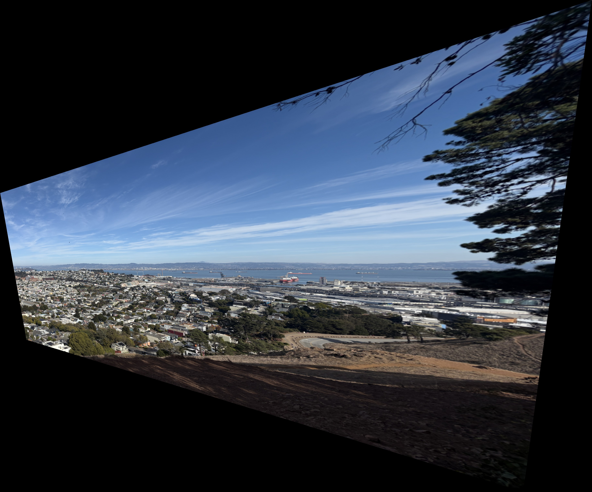
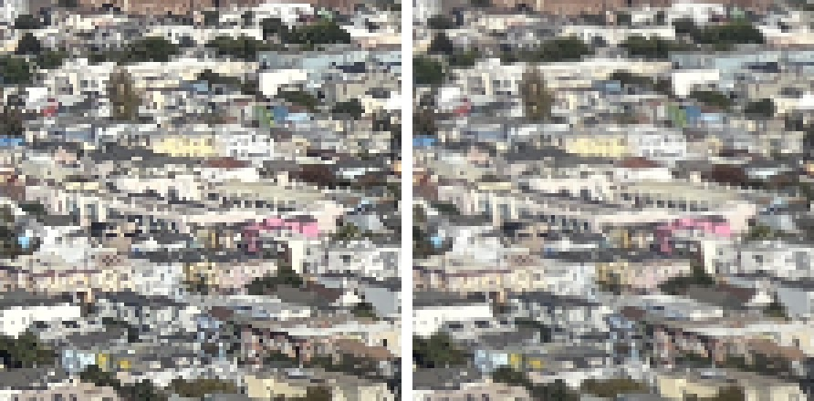
At full size the nearest neighbor approach and the bilinear approach outputs something almost the same. However, if zoomed in, nNearest neighbor gives blocky with stair-stepped edges on rooftops and windows, whereas bilinear is smoother and slightly softer, since every output pixel is an average.
For speed, on the $\approx 11$ megapixel warp canvas nearest neighbor took 0.74 s and bilinear took 1.66 s, about 2.2× slower. This is because blinear reads four pixels and computes weights instead of one lookup.
In the step of imprementing image warping, I test the functinos on a single image that I know is rectangular. I mapped the corners to a rectangle with the object's real aspect ratio, using the length of the top edge as the width. Then I compute $H$ with computeH and warp the image with warpImageBilinear. I found each corner by zooming into the full-resolution photo and reading off its pixel coordinates. Lastly, to avoid points near the horizon get stretched without limit and the predicted bounding box to be enormously large, I clip the output to two rectangle sizes around the target.
Here are some results:
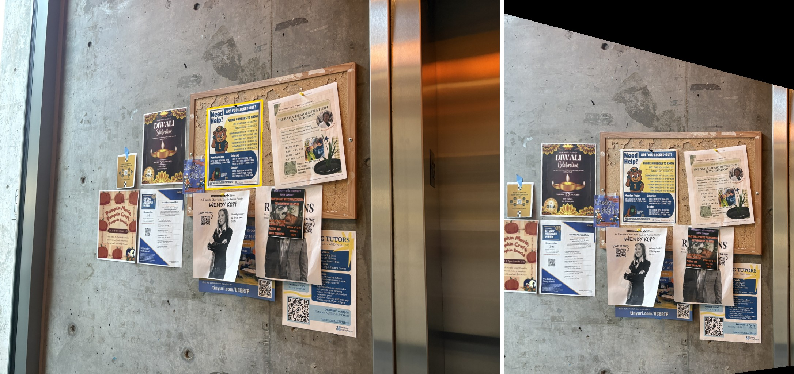
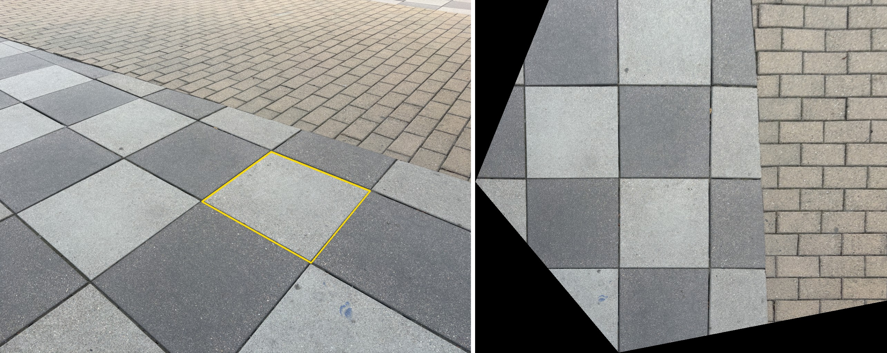
Part A.4
To merge two images to produce stiched panoramic photo, I left image 1 unwarped and warped image 2 into its projection. The mosaic canvas is the bounding box of image 1's corners together with image 2's warped corners.
Pasting image 2 on top of image 1 would leave a hard edge wherever the two differ in exposure or alignment. I tried Feathering and 2 level Laplacian pyramid to avoid this issue.
Method and Implementation Logics
cv2.distanceTransform) gives each pixel's distance to that image's nearest edge. I normalize the two distances into weights $w_1, w_2$ that sum to 1 and take the weighted average. Each image dominates near its own center and fades out linearly toward its edge.Here are three mosics i produced!
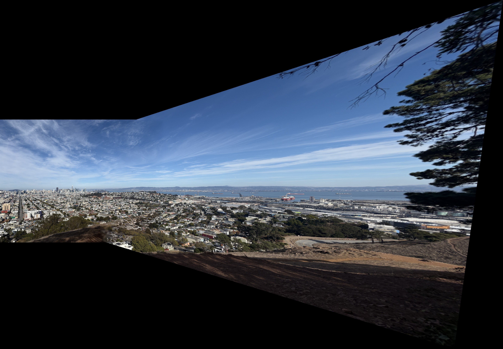
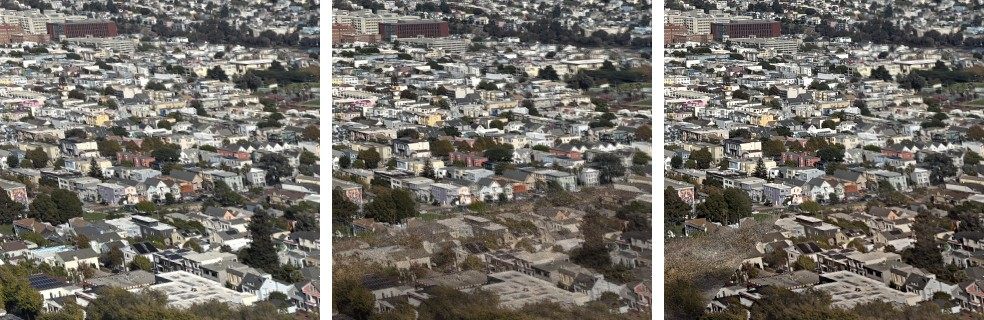
sather1 (reference) and sather2.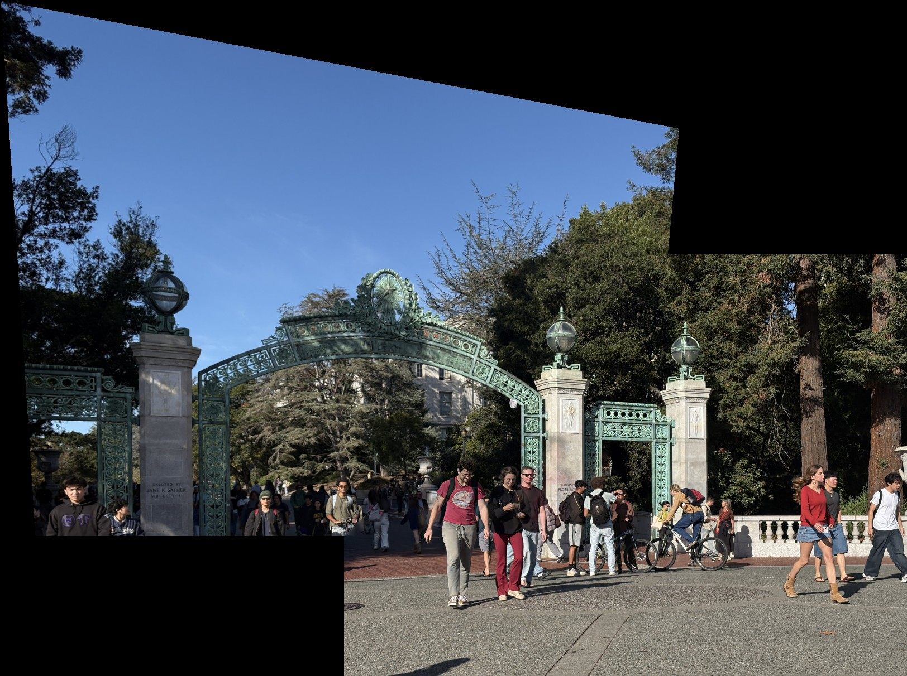
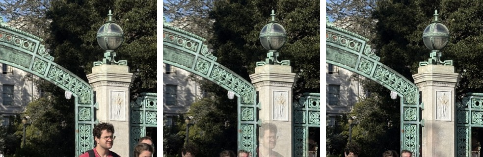
dorm1 (reference) and dorm2.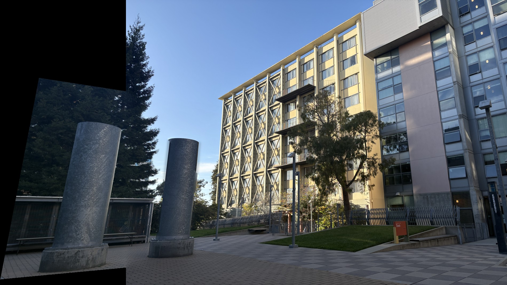
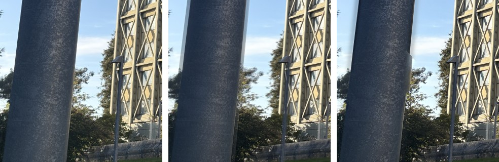
Even though I took photos in a short period of time, there are some errors when stiching images together caused mainly by change in angle or the movement of the subject that makes it hard to stich images seamlessly. To metigate this, the 2 steps Laplasian pyramid came in cratch to get rid of "image ghosts". For example in Mosaic 2, there is a face of male student walking in the middle of the image that looks semi-transparent due to the feathering process of image blending. By blending coarse version of the image and upscaling it in Laplasian method, this "ghost" became a lot less visible and made the blending seamless.